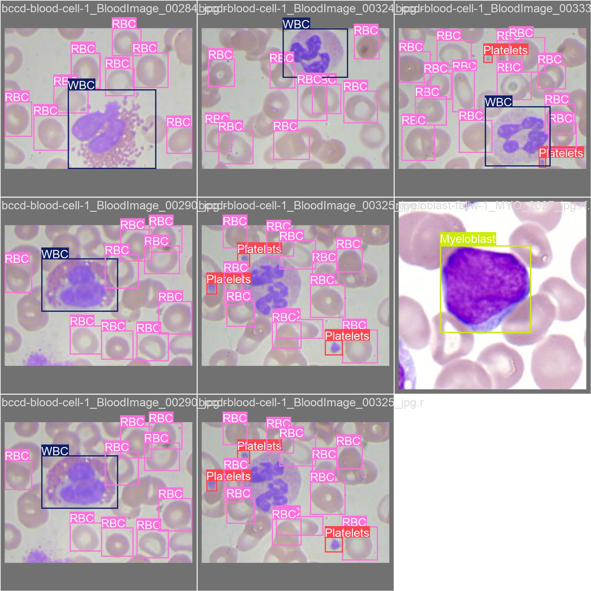
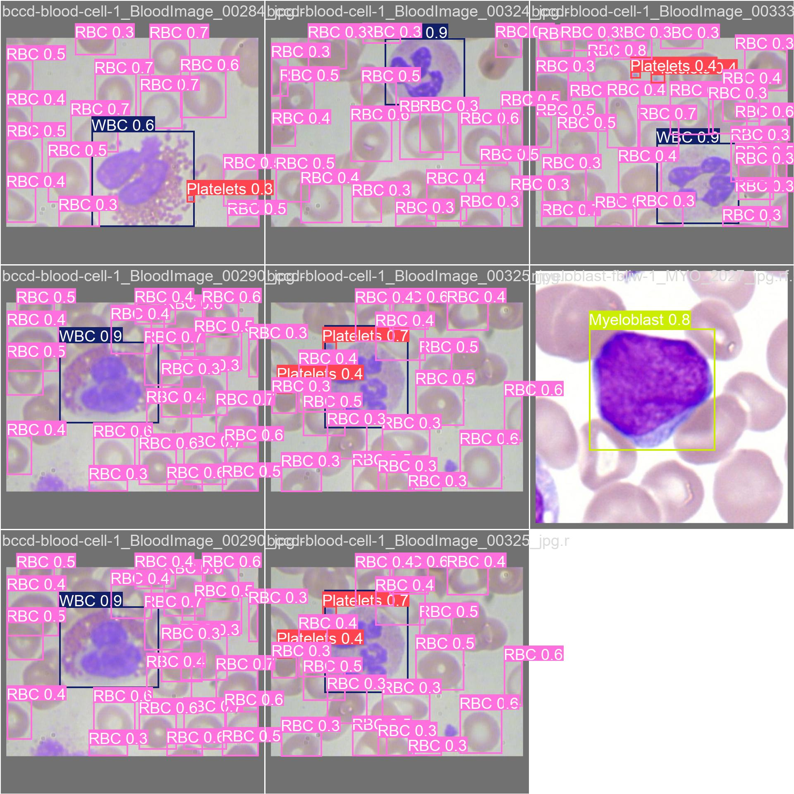

COMPUTER VISION RESEARCH · HEMATOPATHOLOGY · ACTIVE LEARNING
Detection and classification of Leukemic Blasts.
A PyTorch and YOLOv8n pipeline trained on 25,875 microscopy fields with 115,548 expert-annotated cells across 6 research cohorts. Slices Whole Slide Images (WSIs) into overlapping tiles, predicts candidate cell bounding boxes across a 10-class taxonomy (B-ALL stages: Early, Pre, Pro; AML Myeloblast; normal leukocytes and erythrocytes), and provides an active learning replay buffer for ongoing refinement.
EXPERIMENTAL BENCHMARKS
20-Epoch Training Convergence & Evaluation
The baseline detector was trained on the aggregated 6-cohort dataset and evaluated on holdout validation splits. Convergence peaked at epoch 10 with 92.23% mAP@50.

Loss Convergence & Validation Trajectory
Box loss, class loss, DFL loss, and precision/recall metrics over 20 training epochs.

Normalized Confusion Matrix
Inter-class distribution showing separation among Benign, Pre-B ALL stages, and normal WBCs.

Precision-Recall (PR) Curve
Precision-recall curves across all 10 unified dataset classes.

F1-Confidence Calibration Curve
F1 score response across confidence thresholds.
VALIDATION EXAMPLES
Microscopic Validation Batches
Ground-truth labels compared with model predictions on unseen validation tiles. Click any image to view in fullscreen.

Validation Batch 0 — Annotated Ground Truth
Ground-truth bounding boxes designating blast subtypes and normal blood elements.

Validation Batch 0 — Model Predictions
YOLOv8n bounding boxes and classification outputs on the same validation fields.

Validation Batch 1 — Annotated Ground Truth
Dense smear fields with adjacent erythrocytes and leukocytes.

Validation Batch 1 — Model Predictions
Model predictions across varying staining intensities and cell clustering.
DATASET AGGREGATION
Multi-Source Dataset Summary (25,875 Images)
Six public research datasets were mapped into a unified 10-class taxonomy covering lymphoid neoplasms, myeloid neoplasms, and baseline blood elements.
| # | Dataset / Cohort | Target Subsets | Train | Valid | Test | Total Images | Annotated Cells |
|---|---|---|---|---|---|---|---|
| 1 | Leukemia-NFXZN (Tawfiq Islam) | B-ALL subtyping (Benign, Early, Pre, Pro) | 6,589 | 622 | 312 | 7,523 | 83,854 |
| 2 | Blast-Cell-Detection (YOLOv4) | Binary blast vs normal leukocyte differentiation | 3,011 | 72 | 39 | 3,122 | 3,365 |
| 3 | BCCD Blood Cell Foundation | Baseline elements (WBC, RBC, Platelets) | 377 | 110 | 53 | 540 | 8,851 |
| 4 | Blood-Cell-znm2t Differential | Leukocyte differential (12 subtypes) | 9,105 | 389 | 387 | 9,881 | 10,589 |
| 5 | Acute-Leukemia AML/ALL | Myeloblast vs Lymphoblast differentiation | 3,809 | 0 | 0 | 3,809 | 7,626 |
| 6 | Myeloblast-fbliw Dedicated | Acute myeloid leukemia (AML) blasts | 700 | 200 | 100 | 1,000 | 1,263 |
| Total Dataset Size | 23,591 | 1,393 | 891 | 25,875 | 115,548 | ||
Pre B-ALL Blasts
46,491 instances. Intermediate lymphoid blasts exhibiting condensed chromatin and high N:C ratio.
Early & Pro B-ALL
27,220 instances (16,402 Early + 10,818 Pro). Early precursor and late committed lymphoid blast stages.
Myeloblast (AML)
3,003 instances. Myeloid leukemic blasts characterized by moderate basophilic cytoplasm and fine chromatin.
SYSTEM ARCHITECTURE
WSI Tiling and Active Learning Pipeline
Sliding-window tile processing integrated with an experience replay buffer to mitigate catastrophic forgetting during incremental fine-tuning.
.svs / .ndpi / .tiff pyramid files
512×512 tiles with 25% overlap & glass filtering
3.01M parameter forward pass
Re-projects local boxes and collapses overlaps
Stratified historical sampling with 1.5× boost
Sliding-Window WSI Inference
Extracts overlapping patches using tiffslide, filters background glass (>80% bright threshold), maps tile coordinates to slide-level space, and applies global Non-Maximum Suppression (IoU = 0.45).
Experience Replay Buffer
Prevents catastrophic forgetting during review cycles by sampling a 4:1 historical-to-new image ratio, stratified across all 10 taxonomy classes, with a 1.5× quota multiplier for underrepresented classes.
Sandbox Inference & Review UI
FastAPI browser interface for testing local images, dynamically tuning confidence thresholds, modifying bounding boxes, and saving corrections for subsequent training cycles.
MORPHOLOGY REFERENCE
FAB & WHO 2022 Morphological Correlates
Overview of morphological features associated with the 10 categories in the dataset taxonomy.
| Category | Classification Correlate | Cytological Characteristics | Morphological Notes |
|---|---|---|---|
| Early Pre-B | Pre-B Acute Lymphoblastic Leukemia | Small-to-medium blasts, high N:C ratio, dense chromatin, inconspicuous nucleoli | Precursor B-cell blast morphology |
| Pre B-ALL | B-Lymphoblastic Leukemia / Lymphoma | Heterogeneous size, clefted/irregular nuclear contours, variable cytoplasm | Intermediate stage in precursor B-lymphoblastic progression |
| Pro B-ALL | Pro-B (CD10-) Precursor B-ALL | Immature lymphoid morphology lacking mature lineage markers | Early uncommitted stage in B-cell blast differentiation |
| Myeloblast | Acute Myeloid Leukemia (AML) | Large blasts, delicate chromatin, visible nucleoli, variable cytoplasmic basophilia | Distinguished from lymphoid blasts by chromatin texture and Auer rods when present |
| Benign / WBC | Normal Hematopoietic Lineage | Segmented neutrophils, mature lymphocytes, band forms, normoblasts | Baseline non-neoplastic controls for measuring false positive rate |
GETTING STARTED
Local Setup & Usage
Model weights are committed in the repository and available via GitHub Releases.
# 1. Clone repository
git clone https://github.com/abusuraihsakhri/blast-detection-algo.git
cd blast-detection-algo
# 2. Setup virtual environment
python -m venv .venv
source .venv/bin/activate # On Windows: .\.venv\Scripts\Activate.ps1
pip install -r requirements.txt
# 3. Model weights are pre-loaded at data/models/active_model.pt
# Alternatively, download from GitHub Release v1.0.0:
# curl -L -o data/models/active_model.pt https://github.com/abusuraihsakhri/blast-detection-algo/releases/download/v1.0.0/active_model.pt
# 4. Launch the local review UI
python app.py
# Server starts at http://127.0.0.1:8000 with interactive review and sandbox modes
# 5. Run sliding-window inference on a whole slide image
python inference_pipeline.py /path/to/slide.svs